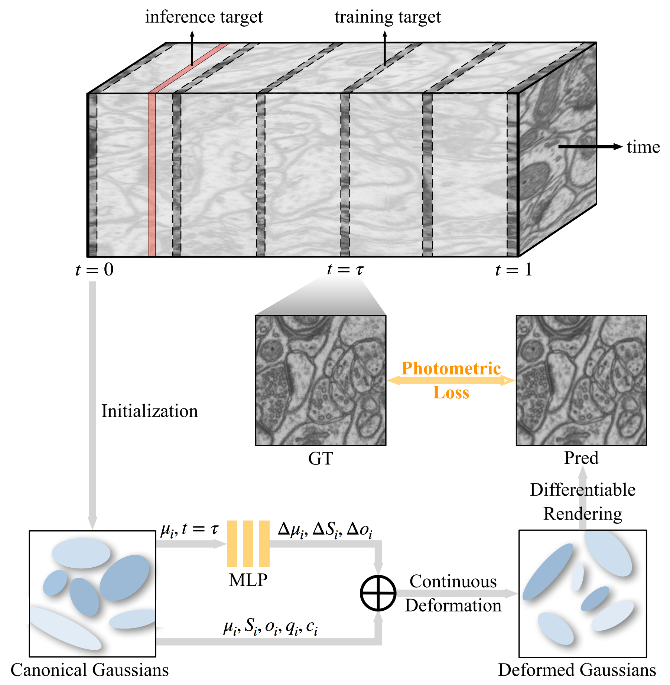
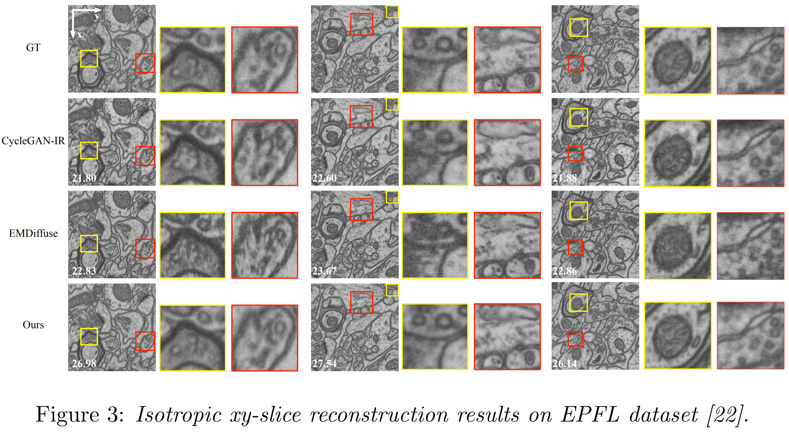
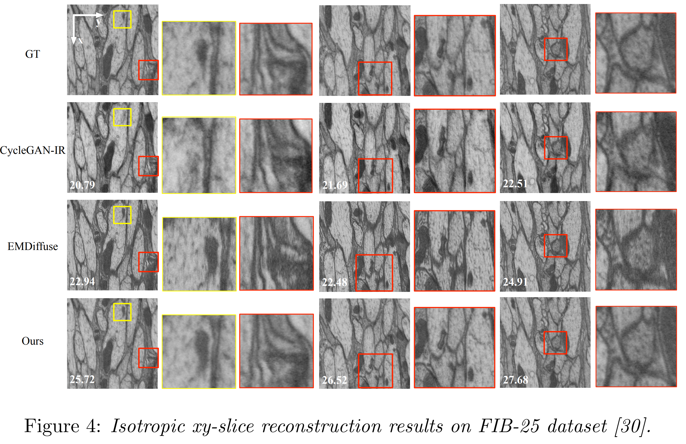

CVPR 2026
Volume electron microscopy (vEM) enables nanoscale 3D imaging of biological structures but remains constrained by acquisition trade-offs, leading to anisotropic volumes with limited axial resolution. Existing deep learning methods seek to restore isotropy by leveraging lateral priors, yet their assumptions break down for morphologically anisotropic structures. We present EMGauss, a general framework for 3D reconstruction from planar scanned 2D slices with applications in vEM, which circumvents the inherent limitations of isotropy-based approaches. Our key innovation is to reframe slice-to-3D reconstruction as a 3D dynamic scene rendering problem based on Gaussian splatting, where the progression of axial slices is modeled as the temporal evolution of 2D Gaussian point clouds. To enhance fidelity in data-sparse regimes, we incorporate a Teacher-Student bootstrapping mechanism that uses high-confidence predictions on unobserved slices as pseudo-supervisory signals. Compared with diffusion- and GAN-based reconstruction methods, EMGauss substantially improves interpolation quality, enables continuous slice synthesis, and eliminates the need for large-scale pretraining. Beyond vEM, it potentially provides a generalizable slice-to-3D solution across diverse imaging domains.
We interpret the low-resolution z-axis as a temporal dimension and employ a deformable 2D Gaussian splatting representation to model thegeometric evolution of 2D structures along depth.
Without pretraining on large-scale datasets, EMGauss reconstruct the whole 3D volumefrom input sparse slices in 0.5h.



@inproceedings{he2026emgauss,
title={EMGauss: Continuous Slice-to-3D Reconstruction via Dynamic Gaussian Modeling in Volume Electron Microscopy},
author={He, Yumeng and Zhou, Zanwei and Zheng, Yekun and Liang, Chen and Wang, Yunbo and Yang, Xiaokang},
booktitle={Proceedings of the IEEE/CVF Conference on Computer Vision and Pattern Recognition},
pages={15606--15615},
year={2026}
}